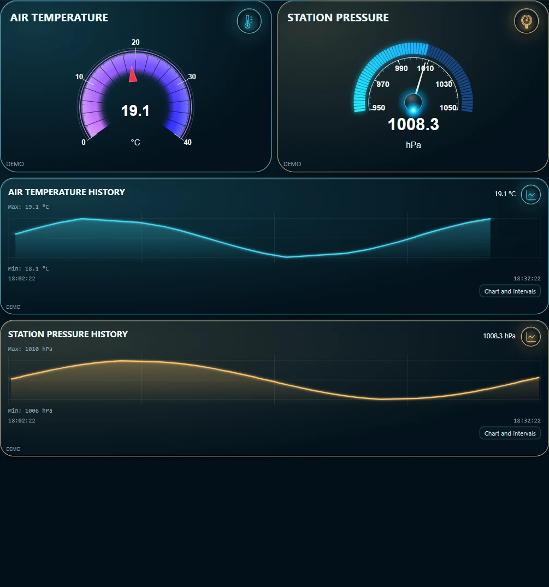
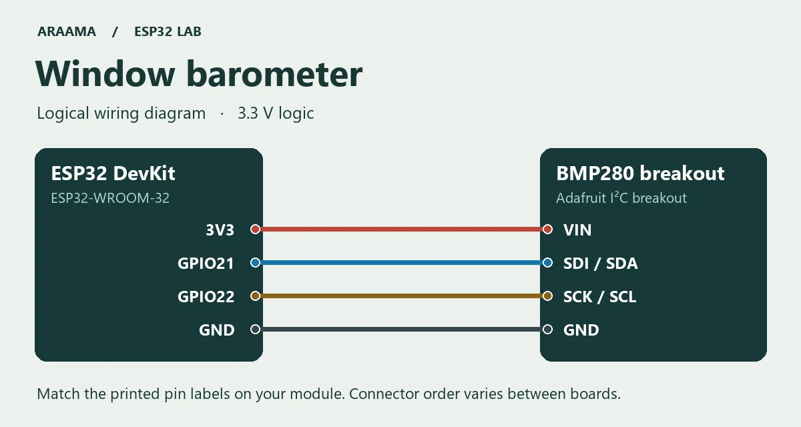

ESP32 / BMP280 / MQTT
Barometr na parapetu
Z jediného údaje na barometru těžko poznáte, zda tlak stoupá, nebo klesá. ESP32 proto čte čidlo BMP280 a posílá na tablet tlak i teplotu čidla. Vedle aktuálních hodnot je vidět i jejich průběh.
Vyzkoušejte si panel bez desky

Stáhnout programy, simulátor a oba projekty ARAAMA (ZIP)
Co budete potřebovat
Vývojovou desku ESP32-WROOM-32, datový kabel USB, propojovací vodiče, Arduino IDE s balíčkem desek ESP32 od Espressifu, zařízení s Androidem 8 nebo novějším a MQTT broker dostupný oběma zařízením v místní síti.
Modul Adafruit BMP280 v režimu I²C. Na této desce odpovídá SDI signálu SDA a SCK signálu SCL.
Přiložený projekt je ověřen ve verzi 0.1.10. Pro malý MQTT panel sestavený ručně je k dispozici také odlehčená verze 0.1.5. ARAAMA 0.1.10 · 110 MiB · ARAAMA 0.1.5 · 39 MiB
Zapojení s odpojeným USB

- 3V3 → VIN
- GND → GND
- GPIO21 → SDI / SDA
- GPIO22 → SCK / SCL
Nahrajte program a zkontrolujte první zprávu
WindowPressure/WindowPressure.ino
Rozbalte ZIP a v Arduino IDE otevřete soubor .ino ze stejnojmenné složky. Vyberte desku ESP32 Dev Module a její port. Ve správci knihoven nainstalujte PubSubClient a Adafruit BMP280 Library včetně nabízených závislostí. Na začátku programu doplňte do prázdných řetězců název Wi-Fi a adresu svého MQTT brokeru. Hesla podle potřeby doplňte u sebe. Ukázka používá port 1883 v důvěryhodné místní síti.
Nahrajte program a otevřete sériový monitor s rychlostí 115200 baudů. Při úspěšném čtení čidla uvidíte každých pět sekund jednu zprávu ve formátu JSON. S prázdným nastavením sítě můžete čidlo vyzkoušet přes USB. Po připojení k brokeru se stejná zpráva odesílá na téma:
lab/window-pressure/state
{"temperature_c":19.1,"pressure_hpa":1008.3}Program hledá čidlo nejprve na adrese 0x76 a potom na 0x77. Knihovna vrací tlak v pascalech, proto jej dělíme stem a na tabletu použijeme hPa. Jde o místní tlak. Předpověď počasí může uvádět tlak přepočtený na hladinu moře.
Vyzkoušejte si panel bez desky
Program simulate.py zastoupí ESP32 s čidlem. Každých pět sekund vypočítá na počítači vzorové hodnoty, které se plynule mění podle matematické funkce. Jakmile je odešlete do brokeru, ARAAMA přijme běžnou MQTT zprávu a vykreslí její hodnoty.
1. Zobrazte první zprávu
Stáhněte a rozbalte ZIP výše. Otevřete terminál ve složce se souborem simulate.py. K tomuto kroku stačí Python 3. Příkaz vypíše jeden řádek a skončí:
python simulate.py barometer --count 1
lab/window-pressure/state {"temperature_c":18.6,"pressure_hpa":1008.0}
2. Pošlete hodnoty do tabletu přes MQTT
Potřebujete běžící MQTT broker dostupný z počítače i tabletu a klienta Mosquitto na počítači. Ověřte příkaz mosquitto_pub --help. V příkladu má broker adresu 192.168.1.20. Dosaďte svou adresu:
python simulate.py barometer --host 192.168.1.20
Nechte terminál otevřený. Výchozí port je 1883. Pokud broker vyžaduje heslo, nastavte přístup pro zápis v místním konfiguračním souboru mosquitto_pub a přístup pro čtení v ARAAMA.
3. Porovnejte ukazatel se zprávou
V ARAAMA otevřete Nastavení → Projekty a načtěte WindowPressure/panel.json. Stávající projekt nejprve exportujte. V nastavení sítě nahraďte broker.example adresou téhož brokeru a spusťte panel. Porovnejte číslo v terminálu s údajem na tabletu. Po několika zprávách uvidíte v grafu první body.
4. Připojte skutečné čidlo
Ukončete generátor pomocí Ctrl+C. V programu pro ESP32 nastavte stejný broker a spusťte desku. Téma i názvy polí zůstávají stejné, takže karty začnou zobrazovat skutečné hodnoty čidla.
Nastavení karet v ARAAMA
WindowPressure/panel.json
Pro zobrazení panelu z obrázku otevřete Nastavení → Projekty, exportujte stávající projekt a otevřete odpovídající soubor panel.json z archivu. V nastavení sítě nahraďte broker.example adresou svého brokeru, doplňte přihlašovací údaje a spusťte panel. Oba ukazatele a oba grafy sdílejí dva tagy. Porovnejte hodnotu s poslední MQTT zprávou a počkejte na několik dalších vzorků.
Panel si můžete sestavit také ručně. Během příjmu zpráv otevřete vyhledávání MQTT, zvolte uvedené téma a postupně vyberte obě pole JSON. Každou vazbu uložte jako tag. Nastavte jednotky, přidejte pro každý tag ručičkový ukazatel a zapněte historii. V kartách grafů vyberte tytéž tagy.
$.temperature_c→ °C$.pressure_hpa→ hPa